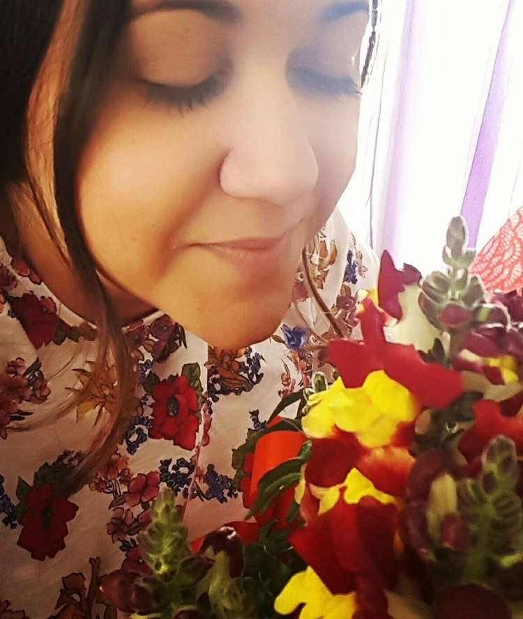

Καλώς ήρθατε!
Είμαι η Κατερίνα Τσίγα και προσφέρω συνεδρίες λογοθεραπείας αποκλειστικά κατ' οίκον, σε παιδιά και ενήλικες. Πιστεύω ότι ο λόγος και η έκφραση αναπτύσσονται καλύτερα εκεί που νιώθουμε ελεύθεροι και ασφαλείς.
Μαθαίνουμε, εξελισσόμαστε και ξεκλειδώνουμε την επικοινωνία μέσα από το παιχνίδι, στην ασφάλεια του σπιτιού σας. Μαζί θα βρούμε τον δικό σας μοναδικό δρόμο για την έκφραση και την επικοινωνία.
Φέρνω τη λογοθεραπεία εκεί που εσείς ή το παιδί σας νιώθετε απόλυτα άνετα: στο δικό σας περιβάλλον. Με οδηγό το παιχνίδι, το γέλιο και την προσωπική σύνδεση, μεταμορφώνουμε την καθημερινότητα σε ένα όμορφο ταξίδι εξέλιξης.
Welcome!
I am Katerina Tsiga and I offer speech therapy sessions exclusively in your home, for children and adults. I believe that speech and expression develop best where we feel free and safe.
We learn, we grow, and we unlock communication through play, in the safety of your own home. Together we will find your own unique path to expression and communication.
I bring speech therapy to where you or your child feel completely at ease: your own environment. Guided by play, laughter and personal connection, we turn everyday life into a beautiful journey of growth.
Λογοθεραπεία κατ' οίκον In-Home Speech Therapy
Κατερίνα Τσίγα Λογοθεραπεύτρια Katerina Tsiga Speech Therapist
Στηρίζοντας την επικοινωνία σε κάθε στάδιο της ζωής.
Supporting communication at every stage of life.
Εξατομικευμένες συνεδρίες λογοθεραπείας για παιδιά και ενήλικες, κατ' οίκον στον δικό σας χώρο. Γιατί ο λόγος αναπτύσσεται καλύτερα εκεί που παίζουμε και νιώθουμε ελεύθεροι.
Personalised speech therapy sessions for children and adults, in the comfort of your own home. Because language develops best where we play and feel free.
- Πρόληψη
- Ενημέρωση
- Αξιολόγηση
- Παρέμβαση
- Prevention
- Information
- Assessment
- Intervention
-
Κατ' οίκον
συνεδρίες In-home
sessions -
Νότια
Προάστια Southern
Suburbs -
Συνεργασία
με ΕΟΠΥΥ EOPYY
cooperation
- ΕπικοινωνίαCommunication
-
- ΜάθησηLearning
Η λογοθεραπεία έρχεται στον χώρο που νιώθετε άνετα. Speech therapy comes to the place where you feel at ease.
Σχετικά με Εμένα
About Me

Η λογοθεραπεία για μένα ξεκινά από τη σύνδεση
For me, speech therapy starts with connection
Είμαι η Κατερίνα Τσίγα, Λογοθεραπεύτρια, και αν έπρεπε να περιγράψω τον τρόπο που βλέπω τη δουλειά μου με δύο λέξεις, θα επέλεγα σύνδεση και παιχνίδι.
I am Katerina Tsiga, Speech Therapist, and if I had to describe the way I see my work in two words, I would choose connection and play.
Πιστεύω πως η επικοινωνία ανθίζει όταν το παιδί νιώθει ασφάλεια, αποδοχή και χαρά. Γι' αυτό επέλεξα να εργάζομαι κατ' οίκον, στον οικείο χώρο κάθε οικογένειας, εκεί όπου το παιδί μπορεί να είναι πραγματικά ο εαυτός του.
I believe that communication blossoms when a child feels safe, accepted and happy. That is why I chose to work in the home, in each family's own environment, where a child can truly be themselves.
Δεν έρχομαι στο σπίτι με έτοιμες, «στεγνές» ασκήσεις. Έρχομαι με παιχνίδι, δημιουργικότητα και δραστηριότητες που έχουν νόημα για το κάθε παιδί, προσαρμοσμένες στις ανάγκες, τα ενδιαφέροντα και τον δικό του ρυθμό.
I do not come into your home with ready-made, «dry» exercises. I come with play, creativity and activities that make sense for each child, adapted to their needs, interests and their own pace.
Γιατί κάθε παιδί έχει τον δικό του τρόπο να επικοινωνεί, να μαθαίνει και να εξελίσσεται.
Because every child has their own way of communicating, learning and growing.
Από το 2013 πραγματοποιώ κατ' οίκον συνεδρίες σε παιδιά και ενήλικες στα Νότια Προάστια της Αττικής, με εξατομικευμένη αξιολόγηση και παρέμβαση σε διαταραχές λόγου, ομιλίας και επικοινωνίας.
Since 2013 I have been providing in-home sessions for children and adults across the Southern Suburbs of Athens, with personalised assessment and intervention for speech, language and communication disorders.
Η δική μου προσέγγιση
My approach
Για μένα, η λογοθεραπεία δεν είναι μόνο οι ασκήσεις που γίνονται μέσα σε μια συνεδρία.
For me, speech therapy is not only the exercises done during a session.
Είναι η σχέση εμπιστοσύνης που χτίζεται με τον θεραπευόμενο και την οικογένειά του, η συνεργασία και οι μικρές καθημερινές κατακτήσεις που, βήμα βήμα, οδηγούν σε μεγαλύτερη αυτοπεποίθηση και ανεξαρτησία.
It is the relationship of trust built with the client and their family, the collaboration and the small everyday achievements that, step by step, lead to greater confidence and independence.
Κάθε θεραπευτικό πλάνο σχεδιάζεται ξεχωριστά, με βάση τις δυνατότητες, τις ανάγκες, την καθημερινότητα και τα ενδιαφέροντα του κάθε ανθρώπου.
Every therapy plan is designed individually, based on each person's abilities, needs, everyday life and interests.
Γιατί όταν η θεραπεία προσαρμόζεται στον άνθρωπο και όχι ο άνθρωπος στη θεραπεία, η διαδικασία γίνεται πιο ουσιαστική.
Because when therapy adapts to the person — and not the person to the therapy — the process becomes more meaningful.
Σπουδές & Επαγγελματική Εμπειρία
Education & Professional Experience
BSc in Logopaedics | Queen Margaret University – Edinburgh (United Kingdom)
BSc in Logopaedics | Queen Margaret University – Edinburgh (United Kingdom)
Η επαγγελματική μου πορεία περιλαμβάνει κλινική άσκηση και εμπειρία σε διαφορετικά θεραπευτικά και εκπαιδευτικά πλαίσια, μεταξύ άλλων:
My professional path includes clinical practice and experience in a range of therapeutic and educational settings, among others:
- Ναυτικό Νοσοκομείο Αθηνών – Νευρολογική Κλινική
- Εθνικό Ίδρυμα Κωφών & Ειδικό Δημοτικό Σχολείο Κωφών
- Αναρρωτήριο Πεντέλης
- Παιδόπολη «Άγιος Ανδρέας»
- Οργάνωση «Δρόμοι Ζωής»
- Δημόσιο Νηπιαγωγείο & Εργαστήριο Λογοθεραπείας
- Athens Naval Hospital – Neurology Clinic
- National Foundation for the Deaf & Special Primary School for the Deaf
- Penteli Rehabilitation Centre
- “Agios Andreas” Children's Village
- “Dromoi Zois” Organisation
- Public Kindergarten & Speech Therapy Laboratory
Παράλληλα, έχω συμμετάσχει σε επιμορφωτικές δράσεις, μεταξύ άλλων:
I have also taken part in training activities, among others:
- «Η σημαντικότητα της αισθητηριακής ολοκλήρωσης»
- Ημερίδα κοινωνικής ενημέρωσης για τη ΔΕΠΥ: «Μεγαλώνω με ΔΕΠΥ…»
- “The importance of sensory integration”
- Public information day on ADHD: “Growing up with ADHD…”
Είμαι μέλος του Σωματείου Λογοθεραπευτών – Λογοπεδικών Ελλάδος (ΣΛΛΕ).
I am a member of the Greek Association of Speech Therapists – Logopaedists (SLLE).
Άδεια Ασκήσεως Επαγγέλματος: Αρ. 2360
Professional License to Practice: No. 2360
Πώς δουλεύω
How I work
Εξατομικευμένα θεραπευτικά πλάνα
Personalised therapy plans
Κάθε άνθρωπος είναι διαφορετικός. Γι' αυτό και κάθε θεραπευτική παρέμβαση ξεκινά από τις δικές του ανάγκες.
Every person is different. That is why every therapeutic intervention starts from their own needs.
Οι δραστηριότητες σχεδιάζονται με βάση την ηλικία, τις δυνατότητες, τα ενδιαφέροντα και την καθημερινότητα του θεραπευόμενου, ώστε η θεραπεία να γίνεται κατανοητή, δημιουργική και ουσιαστική.
Activities are designed around the client's age, abilities, interests and daily life, so that therapy is understandable, creative and meaningful.
Στόχος δεν είναι απλώς να ολοκληρωθούν κάποιες ασκήσεις.
The goal is not simply to complete some exercises.
Στόχος είναι η επικοινωνία να γίνει μέρος της καθημερινής ζωής.
The goal is for communication to become part of everyday life.
Οι Υπηρεσίες μου
My Services
Ολοκληρωμένες υπηρεσίες λογοθεραπείας κατ' οίκον για παιδιά και ενήλικες, προσαρμοσμένες στις ανάγκες σας.
Comprehensive in-home speech therapy services for children and adults, tailored to your needs.
Παιδιά & Έφηβοι
Children & Adolescents
Αξιολόγηση και θεραπεία διαταραχών άρθρωσης, φωνολογικών διαταραχών, αναπτυξιακών γλωσσικών διαταραχών, τραυλισμού και μαθησιακών δυσκολιών.
Assessment and treatment of articulation disorders, phonological disorders, developmental language disorders, stuttering, and learning difficulties.
Ενήλικες
Adults
Αποκατάσταση λόγου και ομιλίας μετά από εγκεφαλικό επεισόδιο, τραύμα ή νευρολογικές παθήσεις. Διαχείριση τραυλισμού και διαταραχών φωνής.
Speech and language rehabilitation after stroke, injury, or neurological conditions. Stuttering management and voice disorders.
Τραυλισμός
Stuttering
Εξατομικευμένη θεραπευτική προσέγγιση για παιδιά και ενήλικες με τραυλισμό, με στόχο την ευχέρεια λόγου και τη βελτίωση της επικοινωνίας.
Personalized therapeutic approach for children and adults who stutter, aiming for speech fluency and improved communication.
Δυσλεξία & Μαθησιακές Δυσκολίες
Dyslexia & Learning Difficulties
Υποστήριξη παιδιών με δυσλεξία, δυσγραφία, δυσαριθμησία και άλλες μαθησιακές δυσκολίες μέσω εξατομικευμένων εκπαιδευτικών παρεμβάσεων.
Support for children with dyslexia, dysgraphia, dyscalculia, and other learning difficulties through personalised educational interventions.
Διαταραχές Φωνής
Voice Disorders
Αξιολόγηση και θεραπεία διαταραχών φωνής, βραχνάδας, αφωνίας και φωνητικής κόπωσης σε παιδιά και ενήλικες.
Assessment and treatment of voice disorders, hoarseness, aphonia, and vocal fatigue in children and adults.
Λογοθεραπεία κατ' οίκον
In-Home Therapy
Οι συνεδρίες πραγματοποιούνται κατ' οίκον, στον δικό σας χώρο — ιδανικά για παιδιά που μαθαίνουν καλύτερα στο οικείο περιβάλλον τους και για ενήλικες ή άτομα με δυσκολία μετακίνησης.
Sessions take place in your own home — ideal for children who thrive in a familiar environment, and for adults or individuals with mobility difficulties.
Τι λένε οι θεραπευόμενοί μου
What Clients Say
Πραγματικές κριτικές από το Google Maps και το Facebook, με χρονολογική σειρά — στο τέλος ακολουθούν ενδεικτικά σχόλια πελατών.
Real reviews from Google Maps and Facebook, in chronological order — followed by illustrative client comments.
Η Κατερίνα είναι μία πολύ καλή λογοθεραπεύτρια! Η κόρη μου την θυμάται και την αγαπάει μέχρι τώρα!!! Φιλάκια Κατερίνα να είσαι καλά!!!
Katerina is a very good speech therapist! My daughter remembers her and loves her to this day!!! Kisses, Katerina — take care!!!
Απλά η καλύτερη!!!
Simply the best!!!
Η καλύτερη !!!
The best!!!
Η κόρη μου έκανε τεράστια πρόοδο στον λόγο της μέσα σε λίγους μήνες. Η κυρία Τσίγα έρχεται στο σπίτι μας και το παιδί νιώθει απόλυτα άνετα — περιμένει πώς και πώς τη συνεδρία!
My daughter made huge progress with her speech within a few months. Mrs. Tsiga comes to our home and my child feels completely at ease — she looks forward to every session!
Μετά το εγκεφαλικό επεισόδιο του πατέρα μου, η λογοθεραπεία κατ' οίκον ήταν η καλύτερη επιλογή. Η κα. Τσίγα είναι επαγγελματίας, υπομονετική και πάντα συνεπής.
After my father's stroke, in-home speech therapy was the best choice for us. Ms. Tsiga is professional, patient, and always reliable.
Συνεργαζόμαστε με την κυρία Τσίγα εδώ και δύο χρόνια για τον γιο μας. Εκτός από την πρόοδο στην ομιλία του, εκτιμούμε ιδιαίτερα την καθοδήγηση που μας δίνει ως γονείς.
We have been working with Ms. Tsiga for two years now, for our son. Besides his speech progress, we especially value the guidance she gives us as parents.
Λογοθεραπεία κατ' οίκον — Όσα ρωτάτε συχνά
In-Home Speech Therapy — Common Questions
Τι σημαίνει λογοθεραπεία κατ' οίκον;
What does in-home speech therapy mean?
Οι συνεδρίες λογοθεραπείας πραγματοποιούνται στον δικό σας χώρο, από πιστοποιημένη λογοθεραπεύτρια με το ίδιο επιστημονικό επίπεδο με ένα κέντρο — χωρίς να χρειαστεί να μετακινηθείτε.
Speech therapy sessions take place in your own home, delivered by a certified speech therapist with the same level of professional care as a center — without the need to travel.
Κέντρο λογοθεραπείας ή κατ' οίκον; Ποια επιλογή σας ταιριάζει;
Speech therapy center or in-home? Which option fits you?
Κάθε οικογένεια είναι διαφορετική. Η κατ' οίκον επιλογή προσφέρει: οικείο περιβάλλον — ιδανικό για παιδιά που δυσκολεύονται σε άγνωστους χώρους —, εξοικονόμηση χρόνου από τις μετακινήσεις, ευελιξία για ενήλικες με κινητικά προβλήματα ή μετά από εγκεφαλικό, και παρατήρηση του θεραπευτή στο πραγματικό περιβάλλον της καθημερινότητας. Τα κέντρα διαθέτουν επί τόπου υποδομή και διεπιστημονική ομάδα. Τηλεφωνήστε μου για συμβουλές χωρίς καμία υποχρέωση.
Every family is different. The in-home option offers: a familiar environment — ideal for children who struggle in unfamiliar settings —, no travel time, flexibility for adults with mobility difficulties or after a stroke, and the therapist observing the real everyday environment. Centers offer on-site facilities and a multidisciplinary team. Call me for free, no-obligation advice.
Σε ποιες περιοχές γίνονται κατ' οίκον συνεδρίες λογοθεραπείας;
Which areas do in-home speech therapy sessions cover?
Οι κατ' οίκον επισκέψεις καλύπτουν τη Γλυφάδα, το Ελληνικό–Αργυρούπολη, τη Βούλα, τη Βάρη, τη Βουλιαγμένη, τον Άλιμο και την Ηλιούπολη — δηλαδή το σύνολο των Νοτίων Προαστίων της Αττικής.
In-home visits cover Glyfada, Elliniko–Argyroupoli, Voula, Vari, Vouliagmeni, Alimos and Ilioupoli — the whole of the Southern Suburbs of Athens.
Πώς γίνεται μια συνεδρία λογοθεραπείας στο σπίτι;
How does an in-home speech therapy session work?
Μετά από αρχική αξιολόγηση, η λογοθεραπεύτρια προσέρχεται στο σπίτι σας με το κατάλληλο υλικό και παιχνίδια. Αρκεί ένας ήσυχος χώρος. Όπου χρειάζεται συμμετέχει ο γονέας, και μετά το πέρας των συνεδριών δίνεται καθοδήγηση για εξάσκηση στο σπίτι.
After an initial assessment, the speech therapist comes to your home with the necessary materials and games. All that is needed is a quiet space. Parents take part where appropriate, and after the sessions you receive guidance for home practice.
Πόσο συχνά γίνονται οι συνεδρίες και πόσο διαρκούν;
How often are sessions and how long do they last?
Η συχνότητα και η διάρκεια διαμορφώνονται εξατομικευμένα μετά την αξιολόγηση — συνήθως 2-3 φορές την εβδομάδα, με συνεδρίες 40 λεπτών, ανάλογα με τους στόχους.
Frequency and duration are tailored after the assessment — typically 2-3 times per week, with 40-minute sessions, depending on your goals.
Καλύπτεται η λογοθεραπεία από ασφαλιστικά ταμεία;
Is speech therapy covered by insurance funds?
Ναι — γίνονται δεκτά όλα τα ασφαλιστικά ταμεία, αλλά υπάρχει η δυνατότητα πραγματοποίησης και ιδιωτικών ραντεβού. Επικοινωνήστε μαζί μου για περισσότερες λεπτομέρειες σχετικά με το δικό σας ταμείο.
Yes — all Greek insurance funds are accepted, but private appointments are also possible. Contact me for more details about your specific fund.
Ελάτε σε Επαφή
Get in Touch
Κλείστε το ραντεβού σας σήμερα. Οι συνεδρίες πραγματοποιούνται κατ' οίκον — με μεγάλη μου χαρά θα σας εξυπηρετήσω.
Book your appointment today. Sessions take place at your home — I will be delighted to assist you.
Περιοχή Εξυπηρέτησης
Service Area
Κατ' οίκον επισκέψεις σε: Γλυφάδα, Ελληνικό–Αργυρούπολη, Βούλα, Βάρη, Βουλιαγμένη, Άλιμο και Ηλιούπολη
Home visits across: Glyfada, Elliniko–Argyroupoli, Voula, Vari, Vouliagmeni, Alimos and Ilioupoli
Ασφαλιστικά Ταμεία
Insurance Funds
Δεκτά όλα τα ασφαλιστικά ταμεία
All insurance funds accepted
Ώρες Λειτουργίας
Hours
Κατόπιν ραντεβού
By appointment
Τα στοιχεία σας χρησιμοποιούνται μόνο για να σας απαντήσω. Για κλινικά ζητήματα τηλεφωνήστε στο 693 752 4966 — μη στέλνετε ιατρικές λεπτομέρειες με τη φόρμα. Πολιτική Απορρήτου.
Your details are used only to reply to you. For clinical matters call +30 693 752 4966 — please do not send medical details through the form. Privacy Policy.
ή στείλτε μου email απευθείας στο tsiga.kat@gmail.com
or email me directly at tsiga.kat@gmail.com
Ο χάρτης της Google φορτώνει μόνο με τη συγκατάθεσή σας.
The Google map loads only with your consent.